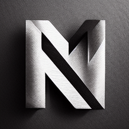

Where Is Nicey?!
All of my links are here! (If it's not here, it's not me)
Bluesky
GitHub
Support me on Ko-fi
Frontier Forums
Mastodon
Reddit
Twitch
YouTube
I have a website!
Email Me (if you need to)